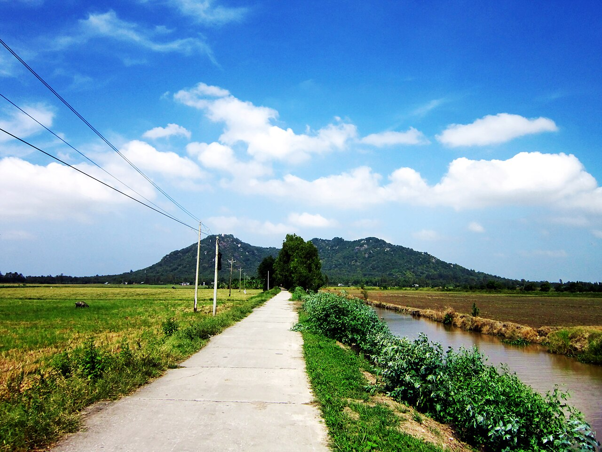

Ngàn năm tuổi.
Vẫn rất cuốn.
Một đô thị cổ.
Một ngày khám phá theo cách mới.

BA THÊ / ÓC EO, AN GIANG Đi rồi,kể thôi ↗ Ảnh: Bùi Thụy Đào Nguyên · CC BY-SA 3.0
Nguồn bài viết, vị trí và phạm vi danh mục
Óc Eo có plot twist.
Óc Eo là gì mà đáng đi? Đọc trong 30 giây ↗
Văn hóa khảo cổ phát triển ở Nam Bộ trong những thế kỷ đầu Công nguyên, thường được giới thiệu với giai đoạn thế kỷ I–VII. Ở Óc Eo – Ba Thê, nền móng, hạt chuỗi, đồ kim hoàn và dấu kênh cổ giúp tìm hiểu cư trú, tín ngưỡng và mạng lưới giao thương xưa.
Hồ sơ đang được đề cử UNESCO; không gọi là Di sản thế giới đã được ghi danh.
Bản đồ Óc Eo.
Chưa đọc được dữ liệu bản đồ lưu tại ứng dụng. Thử tải lại hoặc mở danh sách điểm đến.
Danh sách điểm đến
Nguồn vị trí & cách dùng bản đồ
Chạm cụm số để phóng to các pin gần nhau. Điểm chưa xác nhận tọa độ vẫn có trong danh sách, chưa đặt pin.
Chuyến đi Óc Eo.
Lịch gợi ý từ sáng đến chiều. Chạm từng chặng để xem hoặc chỉ đường.
Lịch trình gợi ý
Ảnh chuyến đi của tôi
Ghép ảnh của bạn với các tem đã nhận thành một story để chia sẻ.
Chuẩn bị trước khi đi
Giờ trong lịch là gợi ý, chưa tính đường đi giữa các điểm. Hỏi Ban Quản lý giờ đón khách trước khi đi.
Hỏi Ban Quản lý trước
Địa chỉ công bố: đường Nguyễn Thị Hạnh, khóm Tân Hiệp A, xã Óc Eo, An Giang. Hỏi lịch thuyết minh, điểm đang tiếp cận được và phí nếu có.
0296 3878 156Đến Óc Eo
OSM có ghi nhận tuyến xe buýt Long Xuyên – Óc Eo và bến xe Óc Eo. Lịch chạy, giá vé cần xác nhận với đơn vị vận tải; đừng dùng dữ liệu cộng đồng như lịch xuất bến thời gian thực.
Bến xe Óc Eo trên OSM ↗Ăn uống và nghỉ
Mục Ăn gì ngon và Nghỉ chân có danh bạ tham khảo tại Óc Eo từ nguồn công khai. Mở nguồn gốc hoặc gọi xác nhận hoạt động và giá trước khi đến. Cơ sở lưu trú theo OSM cũng cần liên hệ lại.
Mang gì?
Nước, mũ, chống nắng, giày bám tốt, sạc dự phòng. Một ngày chỉ nên chọn vài cụm; không tự đi vào ruộng, hố khai quật hoặc khu bảo vệ.
Thông tin liên hệ Ban Quản lý ↗Óc Eo có gì vui?
Ảnh thật. Trải nghiệm thật. Góc nhìn của riêng bạn.